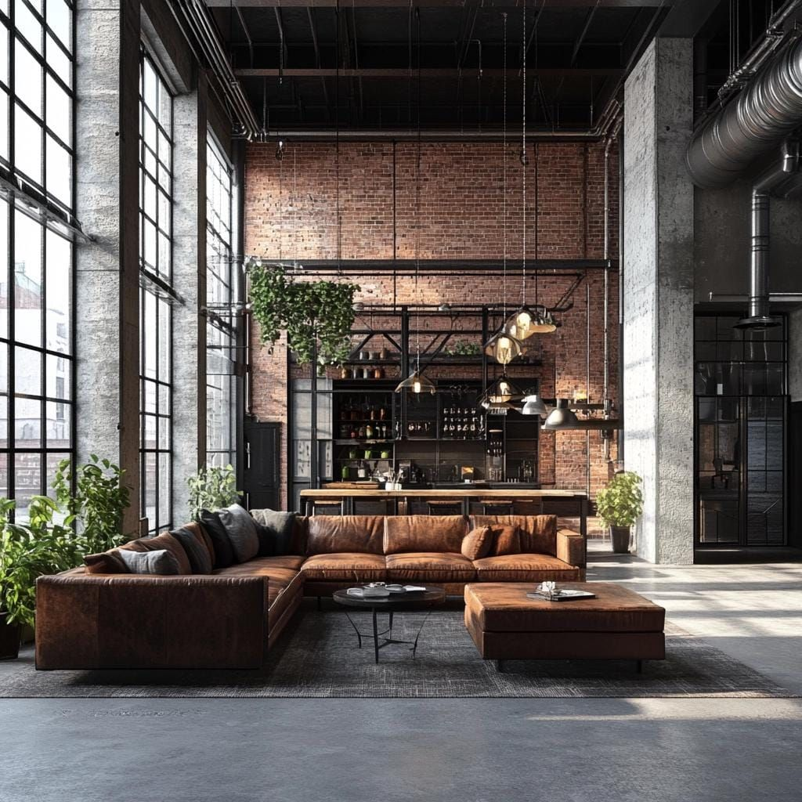
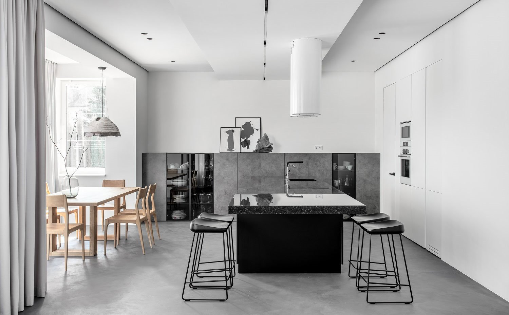
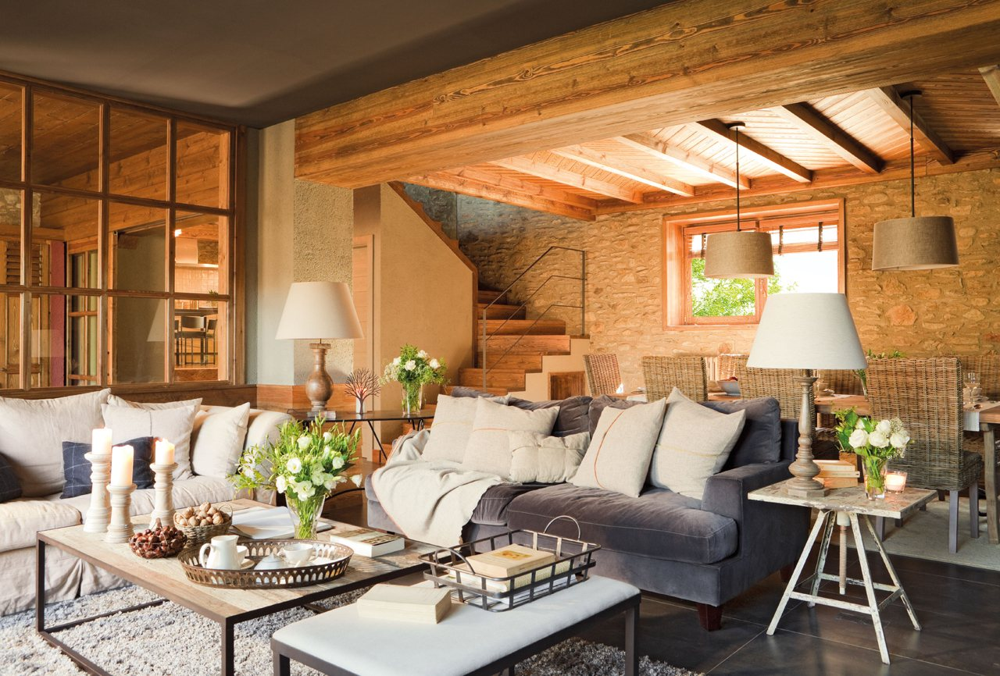
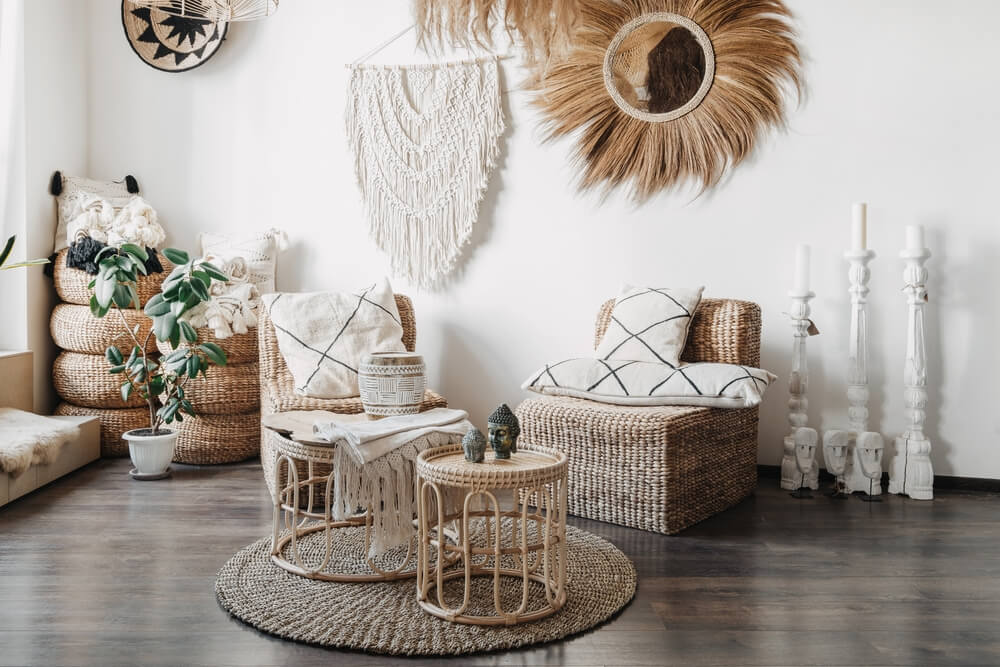
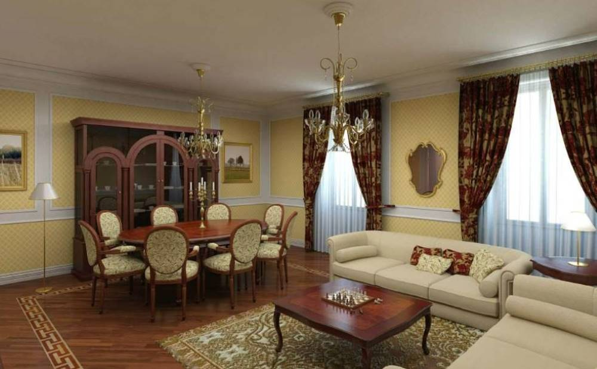
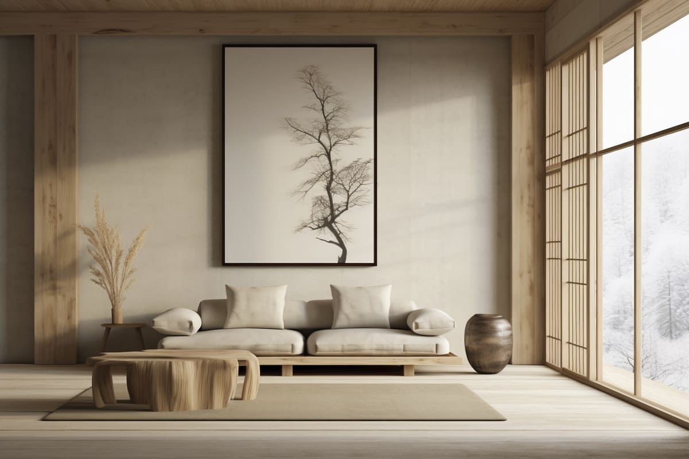

Diseño de interiores
Existen diversos estilos de diseño de interiores que reflejan diferentes estéticas y funcionalidades, incluyendo el estilo industrial, minimalista, nórdico, rústico, y boho, entre otros.
1.Estilo Industrial: Este estilo se inspira en fábricas y almacenes, utilizando materiales como el ladrillo expuesto, metal y madera reciclada. Es ideal para espacios amplios y urbanos.

2.Interiorismo Minimalista: Se basa en la premisa de "menos es más", priorizando la simplicidad y la funcionalidad. Utiliza una paleta de colores neutros y muebles de líneas limpias.

3.Estilo Nórdico: Originario de Escandinavia, este estilo busca crear espacios luminosos y acogedores, utilizando colores claros, madera natural y elementos decorativos simples.

4.Estilo Rústico: Se caracteriza por el uso de materiales naturales y una estética acogedora. Incluye elementos como vigas de madera, muebles robustos y una paleta de colores terrosos.

5.Estilo Boho: Este estilo es ecléctico y colorido, combinando diferentes patrones, texturas y elementos culturales. Es ideal para quienes buscan un ambiente relajado y personal.

6.Estilo Clásico: Se basa en la elegancia y la simetría, utilizando muebles tradicionales y una paleta de colores rica. Es perfecto para quienes prefieren un ambiente atemporal.

7.Estilo Japandi: Una fusión entre el minimalismo japonés y el diseño escandinavo, que enfatiza la funcionalidad y la estética simple, utilizando materiales naturales y una paleta de colores suaves.
